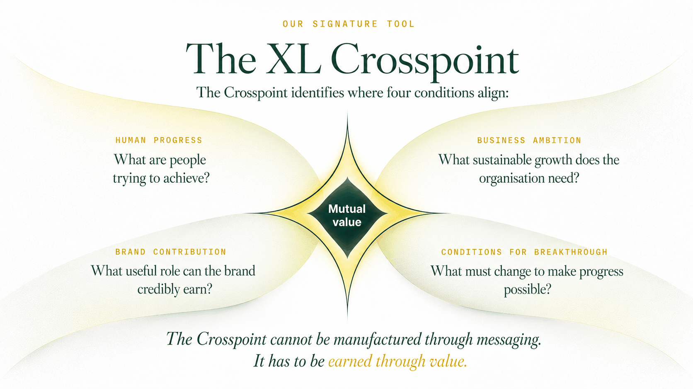

From Being Found to Being Chosen.
Search is becoming a conversation. Buyers are asking AI to help them investigate, compare and evaluate businesses. But visibility alone cannot explain why one business is considered and another is overlooked.
XL connects human buying intent, brand strategy, SEO and AI discovery to help businesses understand what needs to change — and where to invest next.
What is an AI discovery strategy, and how is it different from an AI visibility audit?
An AI visibility audit tells you what AI platforms and search results currently say about your business. An AI discovery strategy goes further. It investigates why your business is or isn't being considered at each stage of the buyer's decision, what influences those choices, and which changes are worth making, then turns the evidence into a prioritised plan.
XL is a strategic marketing consultancy, not a reporting tool. We use visibility evidence to help you decide what to change, starting with strategy workshops from $200. See how the Discovery-to-Decision Map works.
Being visible is not the same as being chosen.
A business can be easy to find and still lose the sale. Five things sit between a buyer's first question and a decision, and a visibility report on its own rarely separates them.
- DiscoverabilityCan the right buyers find you at all?
- Accurate representationWhen a search result or an AI system describes you, is it right?
- CredibilityIs there evidence a buyer can check for themselves?
- ConsiderationWhen options are compared, do you make the shortlist?
- Commercial accessibilityCan a buyer understand the offer and take the next step?
A business may appear in search results or AI answers without being well understood or considered relevant.
Illustrative buyer conversationConsider a buyer asking an AI assistant to find help. The intent changes as the conversation goes on:
- Turn 1 · Exploring“What can a small B2B company do to become more visible in AI search?”
- Turn 2 · Defining“Do we need a technical agency or a marketing strategist?”
- Turn 3 · Comparing“Which consultancies in Dubai help smaller businesses build a strategy rather than just provide visibility reports?”
- Turn 4 · Deciding“Which provider has an affordable structured workshop and practical deliverables?”
This is a constructed example to show how intent shifts. It is not data about real customer behaviour.
The buyer never visits a conventional search results page, yet moves from exploring to deciding. That is why query visibility alone is an incomplete measure. We investigate how a business is represented as the buyer's questions become more specific.
It also means a business can fail in three different ways. An assistant may never discover it. It may discover the business but misunderstand what it offers. Or it may understand the offer perfectly and still recommend another provider, because its reading of the buyer's requirements favours something else. Those are three different problems with three different fixes, and a conventional visibility report may not tell them apart.
One customer. Different questions. Multiple paths to a decision.
Buyers go through five intent states, whether they search with keywords or have a conversation with an AI assistant. Select a state to see the question behind it, how it shows up in each kind of search, and what the brand needs to do.
Traditional search
Keywords, search results, websites and other search experiences.
Conversational AI search
Natural-language questions, follow-up prompts, comparisons and AI-generated recommendations.
Exploring Search intent: Informational What could help me? The question for the brand: Can we be found? See the detail
- The human question
- What could help me?
- Search intent
- Informational
- Traditional search example
- “AI visibility marketing”
- Conversational AI example
- “Why isn't my business appearing when customers ask AI for recommendations?”
- The brand's responsibility
- Be easy to find and clearly relevant to the problem the buyer is exploring.
- Diagnostic considerations
- Clarity, off-site presence and content structure.
- A possible intervention
- Question-led content and well-structured pages that describe the problem in the buyer's terms.
Defining Search intent: Informational / Commercial What should I look for? The question for the brand: Are we understood? See the detail
- The human question
- What should I look for?
- Search intent
- Informational, moving towards Commercial
- Traditional search example
- “AI visibility strategy”
- Conversational AI example
- “What should an AI visibility strategy include for a small B2B company?”
- The brand's responsibility
- Help the buyer define the problem and the criteria for a good answer, and be understood on those terms.
- Diagnostic considerations
- Clarity, positioning and buyer intent.
- A possible intervention
- Positioning and explanatory content that frames the decision and sets out what good looks like.
Comparing Search intent: Commercial Which options deserve consideration? The question for the brand: Are we accurately represented and cited? See the detail
- The human question
- Which options deserve consideration?
- Search intent
- Commercial
- Traditional search example
- “Best AI visibility consultants Dubai”
- Conversational AI example
- “Compare three consultancies that can improve our AI discovery and help us build a practical strategy.”
- The brand's responsibility
- Be accurately represented, and credibly cited, when alternatives are set side by side.
- Diagnostic considerations
- Off-site presence, positioning and content structure.
- A possible intervention
- Consistent facts across sources, independent corroboration and comparison-ready proof.
Deciding Search intent: Commercial / Navigational Which option fits my needs? The question for the brand: Are we considered? See the detail
- The human question
- Which option fits my needs?
- Search intent
- Commercial, with Navigational checks on a named provider
- Traditional search example
- “XL Marketing Services reviews”
- Conversational AI example
- “Would XL Marketing be suitable for a small business with limited budget and no in-house marketing team?”
- The brand's responsibility
- Give the buyer evidence and clear differentiation so they can judge whether the offer fits.
- Diagnostic considerations
- Buyer intent, off-site presence and measurement.
- A possible intervention
- Verifiable evidence, plain statements of who the offer is for, and scope and price clarity.
Acting Search intent: Transactional / Navigational How do I move forward? The question for the brand: Can the buyer act? See the detail
- The human question
- How do I move forward?
- Search intent
- Transactional and Navigational
- Traditional search example
- “XL Marketing book consultation”
- Conversational AI example
- “How do I book an XL strategy workshop, and which package fits my needs?”
- The brand's responsibility
- Make the next step easy to find, easy to understand and easy to take.
- Diagnostic considerations
- Measurement and content structure.
- A possible intervention
- Clear enquiry paths, package clarity and conversion measurement.
Conceptual illustration. Funnel widths are not measured conversion rates. Buyers can enter, revisit or skip any state; the journey is not always linear.
Search intent labels use the standard Informational, Navigational, Commercial and Transactional categories. Local intent is treated as an attribute that can apply to any state, not a stage of its own.
Visibility matters only when the brand has a useful role to play.
The map shows where a buyer's question can go unanswered. The XL Crosspoint is the filter we use to decide what to do about it. It asks four questions of every finding:

- Human progress: What is the customer trying to accomplish?
- Business ambition: What growth does the organisation need?
- Brand contribution: What value can the brand credibly provide?
- Conditions for breakthrough: What must change to make progress possible?
Brand contribution is the point where customer need and business ambition connect. A company's intentions are defined internally, but its contribution has to be tested against what customers value and what the business can credibly deliver.
That is why stronger visibility cannot compensate for an unclear proposition, insufficient proof, weak service delivery or an offer that does not fit the customer's priorities. A business can be technically discoverable, accurately described and frequently cited, and still not be offering something worth choosing. More optimisation would not fix that.
Read how the method works in full on Marketing Decision-Led Growth.
The foundations still matter.
You will hear four terms used for this work. They are disciplines that inform one strategy, not four separate products to buy.
| Discipline | Plain-English explanation | Role in XL's approach |
|---|---|---|
| SEO Search Engine Optimisation | Helping search engines discover, index and understand your website and its relevance to searches. | Technical accessibility, content, internal linking and search performance. |
| E-E-A-T Experience, Expertise, Authoritativeness, Trustworthiness | Demonstrating that your business and its information deserve trust. | Credible experience, proof, authorship and reputation. |
| AEO Answer Engine Optimisation | Making relevant answers clear, useful and retrievable. | Question-led content, clear explanations and direct answers. |
| GEO Generative Engine Optimisation | Improving how businesses and content are represented in AI-generated discovery and answers. | Entity clarity, corroboration, citation research and AI answer testing. |
Two qualifications matter. First, E-E-A-T is a quality-evaluation concept, not a standalone Google ranking factor. Google describes it as a framework for evaluating helpful, trustworthy content, with trust at its centre.[1] Second, AEO and GEO are overlapping industry terms, not standardised optimisation systems with guaranteed outcomes. Google's guidance says established SEO practices remain relevant for AI Overviews and AI Mode, and that no separate special optimisation is required for eligibility.[2]
SEO helps establish discoverability. Credibility helps establish trust. AEO and GEO help us focus our investigation on answers, citations and AI-mediated consideration. All four inform one integrated discovery strategy.
In practice that means looking at how these fit together:
- Technical and content discoverability
- Helpful, relevant information
- Experience, expertise, authority and trust
- Clear answers to buyer questions
- Accurate and corroborated AI representation
- Accessible conversion and enquiry processes
We connect all of this to the six diagnostic levers used in the AI Discovery Readiness Assessment: clarity, positioning, off-site presence, content structure, buyer intent and measurement.
From evidence to decisions your business can act on.
Every engagement runs the four stages of Decision-Led Growth. Each one ends with something tangible.
Understand
Investigate customer intent, brand understanding, competitors and discovery barriers.
Decide
Identify the highest-priority constraints and commercial opportunities.
Design
Develop proportionate interventions across brand, search, content, authority and customer experience.
Learn
Test the changes, measure signals and use evidence to make the next decision.
Depending on the engagement, the outputs can include:
- A tested visibility baseline
- A buyer-intent map
- A competitor comparison
- Prioritised recommendations
- A commercial action plan
- A 12-week testing and learning roadmap
The specific scope and depth depend on the engagement purchased.
What does a visibility problem look like when examined strategically?
Hypothetical example, not an XL client result- Observation
- A company appears in broad category searches but is rarely considered in more specific buyer comparisons.
- Possible causes
- Unclear positioning, missing proof, inadequate buyer-focused content or stronger competitor relevance.
- Strategic response
- Test the likely causes, clarify the proposition and prioritise improvements supported by evidence.
- Learning
- Evaluate whether the changes improve representation, consideration and relevant commercial signals.
The causes listed are hypotheses to test, not conclusions. No result is implied.
The right level of support depends on the decision in front of you.
There are three ways to start, each with a practical strategic outcome. The lower prices lower the risk of a first step. They do not lower the standard of the thinking. Each workshop solves a defined problem, and each ends with something you can act on.
Not sure where you stand? Start with the free AI Discovery Readiness Assessment (four minutes). Your answers are reviewed in every workshop.
Discovery Starter
Understand your visibility gaps and select the first experiments worth running.
You leave with: your first AI discovery action plan
For founders and small businesses who need a starting point.
Enquire nowPositioning Lab
Clarify how customers and AI systems should understand your business.
You leave with: a positioning blueprint and strategy
For businesses that need greater clarity about their offering and competitive relevance.
Enquire nowStrategy Intensive
Connect all six levers into a practical 12-week improvement strategy.
You leave with: a 12-week strategy map and DIY toolkit
For teams ready to own a structured programme of improvement.
Enquire nowYou tell us about your business first. We reply within two working days to confirm fit, scope and timing. All prices are in US dollars.
What actually changes between packages
| Deliverable | $200 Starter | $497 Lab | $950 Intensive |
|---|---|---|---|
| Self-assessment review | Included | Included | Included |
| AI visibility index snapshot | Basic | Comparative | Expanded |
| Buyer-intent mapping | 1 priority state | 2–3 states | Full journey |
| Competitor evidence | Initial observation | Up to 2 competitors | Up to 3 competitors |
| Positioning workshop | Initial clarity checks | Practical core activity | Full positioning integration |
| Six diagnostic levers | Guided overview | Prioritised | All six assessed |
| Strategy output | First-action plan | Positioning-led strategy | Integrated strategy map |
| Testing guidance | Starter prompts | Targeted test plan | DIY workbook and testing protocol |
| Planning horizon | First 30 days | 30–60 days | 12 weeks |
| Follow-up | Written handover | Written handover | Written handover and review |
Each package delivers diagnosis, decisions and guidance your team can carry out. Implementation and continuous monitoring are not included; implementation is a separately scoped service.
Inside each workshop
Discovery Starter 90 minutes
- 15 minInterpret your self-assessment and agree the most important commercial objective
- 20 minReview an AI visibility snapshot and explain what the evidence can and cannot tell us
- 20 minPlace your key buyer questions on the Discovery-to-Decision Map
- 25 minWork through the six levers and choose the two most practical interventions
- 10 minAgree first experiments, success signals and next steps
You leave with a concise strategy card: your priority buyer, the core discovery problem, two interventions, three suggested test prompts and a 30-day action sequence. This is a guided strategy session using limited evidence and your existing knowledge, not a comprehensive audit.
Positioning Lab 3 hours
The positioning exercise examines:
- Who the business is most relevant to, and in what buying situations
- What progress the customer expects from its product or service
- Which alternatives customers consider, and why
- What meaningful differentiation the business can substantiate
- Whether its positioning is understandable to both people and AI systems
We include a simple human-versus-machine comprehension test. An unfamiliar person explains your value proposition after reading your homepage, and we compare that account with AI responses to predefined prompts. Neither test is conclusive, but where they agree and disagree helps identify messaging hypotheses. You leave with a working positioning statement, a buyer-intent map, a comparison with selected competitors, priority message corrections and a 30–60 day strategy.
Strategy Intensive Full day
The day follows Decision-Led Growth:
- 09:00–10:30Understand. Evidence review, buyer needs, six-lever assessment and competitor landscape
- 10:45–12:15Decide. Diagnose barriers to consideration and prioritise commercially meaningful opportunities
- 13:00–14:30Design. Build positioning, content, authority, search and conversion interventions
- 14:45–16:00Learn. Create controlled prompts, success measures, ownership and a 12-week action plan
The final pack includes the strategy map, a buyer-intent prompt library, baseline evidence, a six-lever action planner, an experiment register, retesting instructions and a 12-week schedule with named responsibilities. It separates what your team can do independently from what needs specialised help, such as development work, technical SEO or public relations.
What the outputs look like
Illustrative, to be customised from your workshop findings- Weeks 1–3Establish clarity. Refine positioning, buyer questions, baseline prompts and measurable outcomes. Output: an agreed message and starting evidence.
- Weeks 4–6Improve understanding. Strengthen critical service pages, structured information and factual consistency. Output: changes published and documented.
- Weeks 7–9Build credibility. Develop case studies, corroboration and buyer-relevant proof. Output: evidence accessible to buyers and discovery systems.
- Weeks 10–12Evaluate and decide. Repeat controlled prompts and assess search, enquiry and conversion signals. Output: learnings and next investment decisions.
The actual programme varies according to which levers need work. A client with strong positioning but poor technical accessibility should not be pushed through three weeks of messaging exercises.
| Finding | Strategic interpretation | Recommended decision |
|---|---|---|
| Appears in 7 of 10 broad category tests, but only 2 of 10 buyer-specific tests | Category relevance may be stronger than use-case relevance | Test targeted service and sector positioning |
| Competitors are cited using published case studies | Your evidence may be less accessible or less corroborated | Develop verifiable proof and suitable third-party references |
| AI describes the business as an execution agency rather than a strategy partner | Potential positioning and information-consistency problem | Review source language and correct verified misrepresentation |
| Strong visibility but few qualified enquiries | Discovery may not be the primary bottleneck | Investigate offer clarity, conversion and lead qualification |
No conclusion should be drawn from a single AI response. We repeat tests under documented conditions, compare sources and validate commercial hypotheses wherever possible.
How we handle the evidence
- Visibility evidence is an available-data snapshot from established AI visibility tools, combined with XL's own controlled prompt tests. We disclose any gaps in coverage.
- A young or niche business may have little coverage in existing prompt indexes. That absence is not proof the brand never appears in AI answers.
- Prompt tests are standardised and bounded. A workshop is not an open-ended audit of every AI platform, and AI responses can vary between sessions.
- We do not promise rankings, citations, recommendations or revenue.
Credits toward deeper work
- Full credit: the fee you pay for any workshop is credited in full against a Sprint, Growth Audit or Studio Partnership commissioned within 90 days.
- Step-up credit: within 14 days of a Discovery Starter, $100 of the Starter fee applies toward the Positioning Lab, or $200 toward the Strategy Intensive.
A workshop fee can be credited once, toward one of the options above. The credits do not combine on the same fee.
If you need more than a workshop
Workshops are accessible, defined engagements that produce practical strategy outputs. When the decision in front of you is bigger, the options below go further. The right next step follows your evidence, ambition, capacity and commercial needs. Not every business needs to progress to a retainer.
- Discovery WorkshopsAccessible, defined engagements producing practical strategy outputs. The three options above.
- Strategic SprintsFocused interventions to address a particular business constraint. See Sprints
- Growth AuditMore substantial original research, diagnosis and agreed priority amendments. See the Growth Audit
- Studio PartnershipsOngoing strategy, implementation, measurement and improvement over multiple cycles. See Studio Partnerships
Qualified clients can enquire about deeper work without first buying a workshop. Pricing for every route is on Working With Us.
The short answers
How does AI visibility differ from an AI discovery strategy?
AI visibility describes what AI systems and search results currently say about a business. An AI discovery strategy investigates why the business is or isn't being considered, what influences those decisions, and which changes are worth making. The first establishes evidence. The second helps management act on it.
Do businesses still need SEO if customers use ChatGPT and other AI assistants?
Yes. Google's guidance states that established SEO practices remain relevant for its AI features and that no separate special optimisation is required for eligibility.[2] Other assistants draw on different sources and do not document them in the same way, so we treat the foundations (accessible, helpful, credible information) as necessary but not sufficient.
What is conversational search?
Conversational search is searching by asking questions in natural language and refining them through follow-up prompts. An AI assistant may compare options, explain trade-offs and recommend a shortlist, so a buyer's intent can shift from exploring to comparing to deciding within a single conversation.
How does XL measure AI visibility?
We define a set of buyer prompts, tag each to an intent state, and run them under documented conditions. For each one we record whether the business appears, what role it is given, whether the claims are accurate, which sources are used and how alternative providers are presented. Where tool coverage exists, we add an available-data visibility snapshot. AI answers vary between sessions, so we measure brand representation under defined test conditions. We do not claim to observe real customer conversations.
Does appearing in AI recommendations guarantee more enquiries?
No. Being cited or recommended is an early signal, not a commercial result. Whether it leads to enquiries depends on the proposition, the proof, the offer and how easy it is for a buyer to act. The commercial effect may take several buying cycles to evaluate.
How long might improvements take?
There is no reliable fixed timeline. It depends on your starting position, what changes are made and how search and AI systems update. Our workshop plans run from the first 30 days to 12 weeks. We retest under the same conditions and separate early signals from proven commercial effects.
When does a workshop become insufficient?
When the constraint needs original research, implementation across several areas, sustained measurement or specialist work such as development, technical SEO or public relations. A workshop delivers diagnosis, decisions and guidance your team can carry out. Beyond that, a Sprint, Growth Audit or Studio Partnership may fit better.
What is the difference between a Sprint, a Growth Audit and a Studio Partnership?
A Sprint addresses one defined marketing priority and is finished in two to four weeks. A Growth Audit is original research across your market, competitors and measurement, with the priority fixes implemented. A Studio Partnership is ongoing work across the six levers, on a term matched to the objective. The details and pricing are on Working With Us.
Which workshop should I choose?
Choose the Discovery Starter if you need a starting point and the first experiments worth running. Choose the Positioning Lab if the larger question is how customers and AI systems should understand your offering. Choose the Strategy Intensive if your team is ready to own a structured 12-week programme. If you are unsure, tell us about your business and we will recommend the right one.
Can I enquire about deeper work without buying a workshop first?
Yes. The workshops are an accessible starting point, not a required first step. If you already know the decision in front of you, discuss a strategic engagement directly.
Sources
- Google Search Central, “Creating helpful, reliable, people-first content”. developers.google.com (opens in a new tab)
- Google Search Central, “AI features and your website”. developers.google.com (opens in a new tab)
Where this page describes XL's own framework (the Discovery-to-Decision Map, the Crosspoint and Decision-Led Growth), it is XL's method, not an industry standard. Search-intent categories and the SEO, E-E-A-T, AEO and GEO terms are established industry concepts. Examples marked illustrative or hypothetical are not client results.
Your next marketing decision deserves more than a visibility score.
Tell us the decision in front of you. We come back with the route that fits, what it involves and what it would cost.
Not ready yet? Take the free AI Discovery Readiness Assessment.